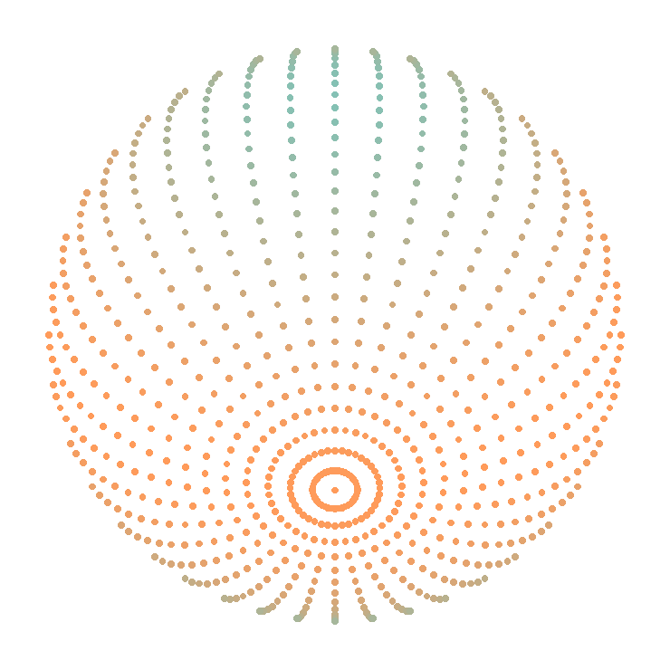

Composites Research Laboratory
How does a lattice absorb impact?
I designed and 3D-printed 144 elastomeric honeycomb structures to study how they deform and absorb energy under compression.
Read the case studyAerospace engineering
I study aerospace engineering at the University of Maryland. My work spans impact testing, flight software, and orbital dynamics.
Explore my workComposites Research Laboratory
I designed and 3D-printed 144 elastomeric honeycomb structures to study how they deform and absorb energy under compression.
Read the case study
J2 + J3 / Surface gravityComputational geodesy
At Maryland’s Machine Learning for Dynamical Systems Lab, I built an interactive dashboard for exploring gravity fields. The linked implementation maps Python model data and numerical gravity calculations onto a 3D globe.
View project on GitHubOrbital dynamics · 2025
I built a Python simulator that turns orbital elements or a satellite state into a 3D trajectory. I extended the two-body model with Earth’s J2 oblateness term and atmospheric drag.
Terrapin Rocket Team · Since 2025
On Maryland’s IREC competition team, I work on onboard state estimation and embedded flight software. I used Monte Carlo simulations and hardware-in-the-loop playback to evaluate attitude estimates.
Electrical lead · 2023
On an eight-student team with a $300 budget, I led the electrical work for an automated obstacle-course vehicle. I wired the sensors, power system, and motors, wrote the Arduino control code, and printed enclosures for the electronics.
The Python model evaluates a central gravity term and the J2 and J3 corrections on a spherical Earth. It exports the resulting acceleration magnitude alongside each sampled position.
Read the Python modelThe mascon experiment sums contributions from discrete sources on a latitude–longitude grid. The plotted field uses synthetic source strengths. The script also explores reading GRACE liquid-water-equivalent thickness data.
Explore the mascon experimentThe Three.js viewer evaluates the field at the vertices of a sphere, normalizes its range, and maps it to vertex colors. Orbit controls let the viewer inspect the globe from different angles.
Inspect the rendering codeEducation & contact
I’m pursuing a B.S. in Aerospace Engineering at the University of Maryland, College Park, with graduation expected in May 2027. My coursework includes orbital dynamics, aerospace structures, control systems, and flight software. In the lab and on student teams, I use those tools to connect models with measurements.
Connect on LinkedIn